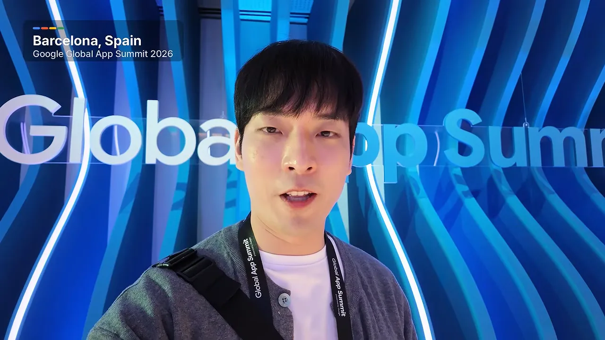
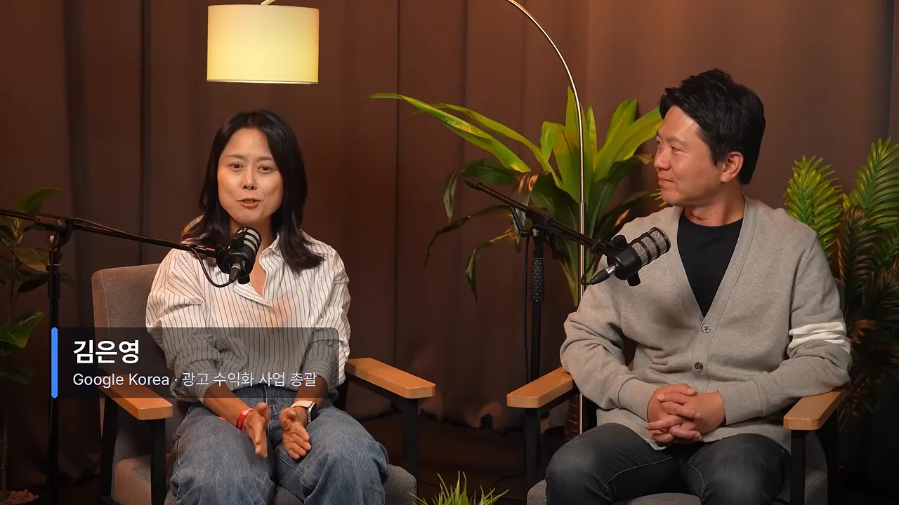
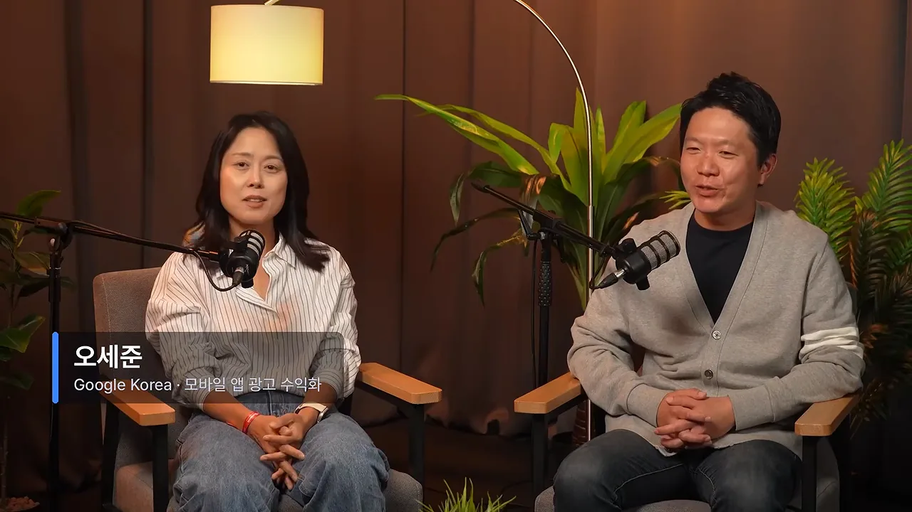
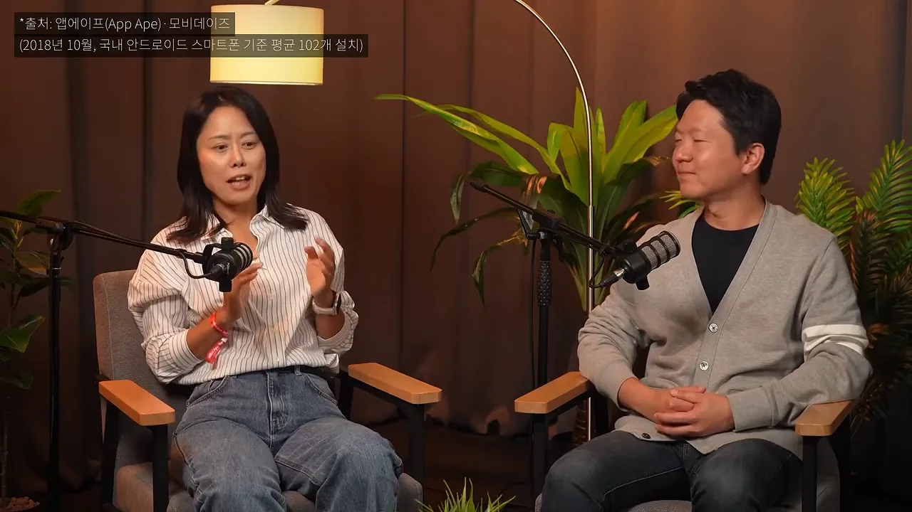
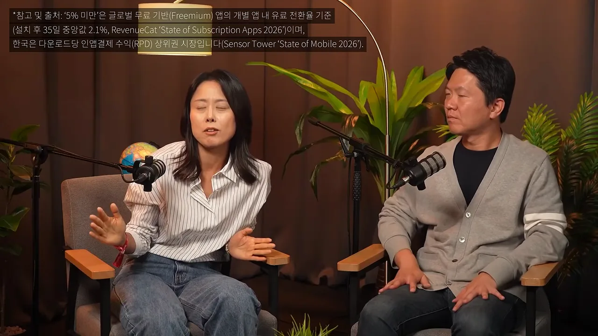
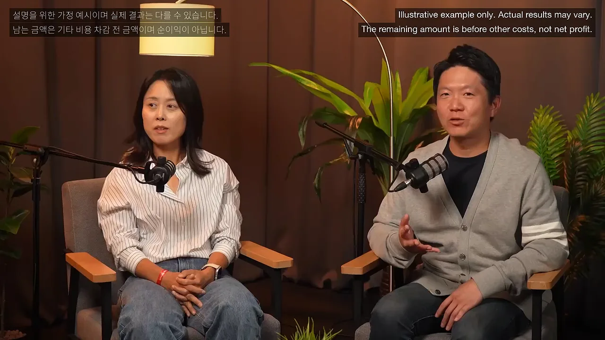

결제하는 5%와 나머지 95%
무대는 스페인 바르셀로나에서 열린 구글 글로벌 앱 서밋이에요. 전 세계 앱 퍼블리셔와 게임사가 모여 앱 수익화 업데이트를 나누는 행사예요. 조코딩은 바이브 코딩으로 앱을 만든 1인 개발자가 글로벌에서 돈을 벌려면 무엇을 해야 하는지 묻는 자리라고 소개해요.

답하는 사람은 구글 코리아의 두 사람이에요. 왼쪽 김은영 님은 화면 자막대로 광고 수익화 사업을 총괄해요. AdMob이나 구글 애드 매니저로 앱이 광고 수익을 내도록 돕는 일이에요.

오른쪽 오세준 님은 같은 조직에서 모바일 앱 광고 수익화를 맡고 있어요. 광고 수익화에는 앱, 웹, 비디오가 있는데 그중 앱 비즈니스 담당이에요.

결제하는 사람은 5%도 안 돼요
은영 님이 내세우는 핵심은 하이브리드 수익화예요. 근거로 숫자 두 개를 꺼내요. 첫째, 한국 스마트폰에는 앱이 평균 100개 남짓 깔려 있어요. 유저가 앱마다 느끼는 애착이 제각각이니, 돈을 내는 방법도 여러 개 열어 두는 게 좋아요. 화면 왼쪽 위 각주가 이 숫자의 출처를 밝혀요. 2018년 10월 국내 안드로이드 스마트폰 기준 평균 102개예요.

둘째, 인앱 결제를 하는 유저 비율이에요. 조코딩은 10~20%를 짐작했지만 실제로는 5% 미만이고, 그나마 한국이 지불 의향이 높아서 높은 편이래요. 이번 각주는 세 줄이에요. '5% 미만'은 글로벌 무료 기반(Freemium) 앱의 유료 전환율 기준이고, 설치 후 35일 중앙값이 2.1%라고 적혀 있어요. 마지막 줄은 한국이 다운로드당 인앱 결제 수익(RPD(Revenue Per Download)) 상위권 시장이라는 Sensor Tower 자료예요.

유저 그룹마다 광고를 다르게 써요
숫자가 이렇다 보니 균형이 중요해요. 95%는 광고로 수익화하고, 그렇다고 광고를 무리하게 넣어 5%의 결제를 막으면 안 돼요. 세준 님은 광고를 두 종류로 나눠요. 개발자가 정한 시점에 뜨는 푸시형(디스플레이·전면 광고)과, 유저가 원할 때 눌러서 보는 보상형이에요. 보상형 광고는 필요를 느낄 때 하는 행동이라 인앱 결제와 성격이 비슷해요.
아래 그림은 그 전략을 정리한 거예요. 막대는 비율에 맞춰 그렸어요. 오른쪽 끝 좁은 조각이 결제 유저예요.
새 포맷 하나로 숫자가 바뀐 사례도 나와요. 베트남 개발사 벌컨 랩스는 네이티브 전면 광고를 도입해 노출량을 늘렸고, ARPDAU(Average Revenue Per Daily Active User)가 21% 올랐다고 해요. 네이티브 광고는 완성된 광고 소재를 그대로 받는 대신 아이콘, 이미지, 텍스트를 화면 어디에 둘지 개발자가 정하는 포맷이에요. 조코딩은 광고 수익이 10억 원이면 2억 1천만 원이 늘어나는 셈이라고 풀어요.
영상에서는 이 사례의 출처를 따로 밝히지 않았어요. 공개된 AdMob 사례 페이지에서는 이 숫자를 찾지 못했으니 발표자의 사례로만 읽어 주세요.
같은 사람에게 계속 보여 주면 단가가 떨어져요
광고는 같은 유저에게 100번, 200번, 300번 보여 준다고 수익이 그만큼 늘지 않아요. 한 사람에게 노출이 쌓일수록 광고 단가가 떨어지기 때문이에요. 광고 수익화를 해 본 개발자가 '시간이 갈수록 단가가 떨어지는데 뭔가 잘못된 건가' 하고 고민하는 경우가 많은데, 대개 이 현상이에요.
마트 시식으로 보면 쉬워요
세준 님은 마트 시식대를 예로 들어요. 잘 구운 고기 10점이 있어요. 한 사람이 10점을 다 먹고 살지 고민하는 것보다, 10명이 한 점씩 먹고 각자 고민하는 쪽이 구매로 이어질 확률이 높아요. 광고비를 내는 광고주도 같아요. 자기 마케팅 목표를 이루려고 돈을 쓰는데, 그 돈이 한 사람이나 소수에게만 쏠리길 원하지 않아요.
그래서 무엇을 하나요
해법은 광고를 덜 보던 유저에게 닿는 거예요. 내 앱에서 보상형 광고를 보는 유저가 20%라면, 나머지 80%에게 닿을 방법을 고민해요.
- 새 지면 만들기 — 광고가 없던 화면에 자리를 새로 만들어요.
- 새 포맷 빨리 실험하기 — 벌컨 랩스의 네이티브 전면 광고처럼, 새 포맷이 나오면 바로 시험해요.
- 3~6개월마다 지면 바꾸기 — 앱이 하나뿐이고 유저가 고정돼 있다면 광고 위치나 광고가 뜨는 흐름을 주기적으로 바꿔요.
마지막 방법은 유저가 광고에 무뎌지는 걸 막는 장치예요. 세준 님은 게임·비게임을 가리지 않고 유저가 많은 앱이 쓰는 최적화 기술이라고 설명해요. 같은 자리에 같은 광고가 계속 뜨면 유저 눈에 들어오지 않으니, 계속 새 자극을 주라는 거예요.
A/B 테스트로 기본값을 찾아요
세준 님은 머릿속에 떠오르는 의문이 다 A/B 테스트 시나리오가 될 수 있다고 말해요. 예로 든 건 캐주얼 게임이에요. 스테이지 10에서 11로 넘어갈 때 유저가 30% 이상 떠나는데, 마침 그 자리에 전면 광고가 있어요. 그럼 '이 광고 때문인가' 하는 의문이 생기죠.
그룹을 나눠 2~3주 돌려요
이걸 확인하려고 북미의 많은 앱사는 유저를 4~5개 그룹으로 나눠요. 아래 그림의 네 칸이 영상이 든 시나리오예요. 왼쪽 첫 칸은 전면 광고를 아예 빼고, 나머지는 하루 2번, 하루 4번, 이틀에 1번씩 보여 줘요.
비교할 때는 수익만 보지 않아요. 리텐션이 어땠는지, 수익화 지표가 어땠는지, 유료 마케팅을 하고 있다면 그 지표가 어떻게 바뀌었는지까지 봐요. 그리고 시나리오마다 ROAS(Return On Ad Spend)와 LTV(Lifetime Value)를 계산해 수익성을 따져요.
가장 좋은 안이 새 기본값이 돼요
결과가 나오면 가장 좋은 시나리오를 기본값으로 삼아요. 그 상태로 운영하다 보면 또 다른 의문이 생기고, 그걸 가설로 세워 다시 테스트해요. 잘 나오는 걸 고정하고 다른 변수를 바꾸는 이 반복이 곧 최적화예요.
flowchart LR A["의문
(이탈이 광고 탓?)"] --> B["가설을 세우고
그룹 4~5개로 나눔"] B --> C["2~3주 실행"] C --> D["리텐션 · 수익
ROAS · LTV 비교"] D --> E["가장 좋은 안을
기본값으로"] E --> A
이제 에이전트가 설계를 맡아요
조코딩은 이 설계를 AI 에이전트에게 맡겨 변수를 나누고, 고르고, 반복하게 할 수 있지 않냐고 물어요. 은영 님도 에이전트가 운영 손을 덜어 주면 짧은 기간에 더 많은 테스트를 할 수 있을 거라고 답해요.
은영 님이 최근 만난 유럽 개발사 대표 이야기도 나와요. 엔지니어 출신이 아니라서 예전에는 직원에게 '이거 해 보면 어때' 하고 부탁하고 기다렸는데, 이제는 직접 실험을 돌리고 다음 날 아침 결과를 들고 온대요.
AI 앱은 광고 수익이 API 비용보다 커야 해요
요즘 많이 만드는 AI 앱은 제미나이 같은 AI API(Application Programming Interface)를 부를 때마다 토큰 비용이 나가요. 광고 수익이 이 비용보다 커야 앱을 만든 의미가 있어요. 조코딩은 광고 단가도 제각각인데 복잡한 인프라가 필요하지 않냐고 물어요.
유저 한 명이 하루에 버는 돈부터 봐요
세준 님의 답은 출발점부터 잡자는 거예요. 유저 한 명이 하루 평균 얼마를 벌어 주는지 알아야 해요. 그러려면 트래킹을 하고 내 앱의 트래픽을 이해해야 해요. 결제 유저를 빼고 광고로만 기여하는 유저를 보면, 결국 모든 게 LTV에 달려 있어요.
LTV를 키우려면 유저를 나눠서 다르게 대해요. 구매할 것 같은 상위 2~3%에게는 다른 페이월 경험을 보여 주고, 화면 전환 때 뜨는 광고는 건너뛰게 해요. 구매 가능성이 아주 낮은 유저에게는 광고를 많이 보여 주는 게 이득이에요. 얼마나가 적당한지는 역시 테스트로 정해요.
광고 한 번 수익과 토큰 비용 맞대 보기
세준 님이 든 예시는 이래요. AI 기능에 드는 토큰 비용이 1.5센트라고 해요. 광고 eCPM이 30달러이고 일치율이 95%라면 수익은 약 2.85센트예요. 30달러를 1,000으로 나눈 3센트에 95%를 곱한 값이라, 광고 한 번 노출에서 나오는 돈으로 읽으면 맞아요. 2.85센트에서 1.5센트를 빼면 1.35센트가 남으니 굴러가는 비즈니스라는 거예요.
이 계산이 나올 때 화면 왼쪽 위에 각주가 떠요. 설명을 위한 가정이고 실제 결과는 다를 수 있다는 것, 그리고 남는 금액은 다른 비용을 빼기 전 금액이지 순이익이 아니라는 내용이에요. 오른쪽 위에는 같은 말이 영어로 적혀 있어요.

영상은 이 토큰 비용을 '5회 토큰 비용'이라고 말해요. AI 기능을 몇 번 쓸 때 광고를 한 번 보여 주는지가 곧 이 비용을 정한다는 뜻으로 읽을 수 있어요. 아래에서 영상의 세 숫자를 직접 바꿔 볼 수 있어요.
광고 한 번 수익 2.85센트
남는 돈 1.35센트
광고 수익이 토큰 비용보다 커요.
- 영상 값(30달러, 95%, 1.5센트)에서 시작해 남는 돈이 1.35센트인지 확인해 보세요.
- eCPM을 15달러로 내려 보세요. 광고 수익이 1.5센트 아래로 떨어져 손해가 나요. 같은 유저에게 노출이 쌓여 단가가 떨어지면 이렇게 돼요.
- 토큰 비용을 3센트로 올려 보세요. 광고 한 번으로 AI 기능을 너무 많이 쓰게 하면 eCPM이 30달러여도 버티기 어려워요.
필요한 건 SDK 두 개예요
인프라는 생각보다 단순해요. 광고를 돌리려면 AdMob SDK가 있어야 하고, Firebase를 쓴다면 Firebase 애널리틱스 SDK를 더해요. 앱 업데이트 없이 유저마다 다른 시나리오를 시험하려면 Firebase의 리모트 컨피그를 써요. 세준 님은 이걸 원격 제어라고 불러요.
얼마나 걸리는지도 물어요. 세준 님은 개발자라면 일주일 안, 빠른 사람은 반나절이면 끝낸다고 해요. 조코딩이 바이브 코딩이면 30분~1시간에도 되지 않냐고 하자 가능할 것 같다고 답해요.
광고는 타이밍이 문제예요
수익만 보고 전면 광고를 마구 넣으면 앱을 지우게 돼요. 조코딩도 그런 경험이 있다며, 광고와 리텐션의 균형을 어떻게 잡냐고 물어요.
은영 님은 유저가 무조건 광고를 싫어할 거라는 건 흔한 오해라고 해요. 문제는 광고 자체보다 타이밍이에요. 콘텐츠나 게임에 몰입해 있는데 전면 광고가 갑자기 끼어들어 흐름을 끊는 게 최악이에요. 그래서 구글은 몰입을 덜 깨는 포맷에 투자하고 있다고 해요.
몰입을 덜 깨는 새 포맷
세준 님이 기존 포맷과 새 포맷을 차례로 소개해요. 디스플레이 배너, 전면 광고, 리워드 비디오는 이미 잘 알려져 있어요. 영상에 나온 포맷을 모으면 이래요.
| 포맷 | 어떻게 뜨나요 | 영상이 말하는 특징 |
|---|---|---|
| 디스플레이 배너 · 전면 · 리워드 비디오 | 배너 자리, 화면 전체, 유저가 눌러서 보는 영상 | 잘 알려진 기존 포맷 |
| 네이티브 전면 | 화면 전체지만 배치를 개발자가 정함 | 벌컨 랩스가 노출을 늘린 사례(1장) |
| 픽처 인 픽처(PiP) | 콘텐츠 위에 작은 창으로 광고 | 새로 출시. 몰입을 방해하는 정도를 줄여요 |
| 스퀴즈백 | 기존 화면이 살짝 줄고 둘레에 광고 | 조코딩이 데모를 보고 놀랐다고 한 포맷 |
세 포맷이 화면을 어떻게 쓰는지 나란히 그려 봤어요. 강조색 칸이 광고, 테두리만 있는 칸이 앱 화면이에요.
PiP는 유튜브를 보다가 홈 화면으로 나가면 영상이 작은 창으로 떠 있는 모습과 같아요. 콘텐츠는 계속 소비하면서 광고도 볼 수 있어요. 스퀴즈백은 조코딩이 직접 데모를 보고, 앱 사용 경험은 그대로 두고 수익을 얻을 수 있으니 거의 무조건 도입할 만하다고 느꼈다고 해요.
글로벌로 나가면 더 과감하게
한국 개발자도 글로벌을 노리고 앱을 많이 만들어요. 그럼 해외 광고를 받으려면 해외 사업자가 있어야 할까요? 은영 님의 답은 아니에요. AdMob SDK 하나만 넣으면 전 세계 유저에게 광고가 나가고, 해외 오피스 같은 건 필요 없어요.
은영 님은 그 대신 시간을 쓸 곳을 짚어요. 여러 나라 유저가 앱을 좋아하고 다시 찾게 만드는 장치를 마련하는 거예요. 리포팅과 대시보드를 보면서 어디를 고쳐야 리텐션이 오를지 고민하는 일이 더 중요해졌다고 해요.
한국 개발자는 수익화에 보수적이에요
세준 님은 몇 년간 한국 퍼블리셔와 일하며 느낀 점을 꺼내요. 한국 퍼블리셔는 아이디어가 좋고 선택과 집중도 잘해요. 그런데 수익화로 넘어가면 아주 보수적으로 바뀐대요. 전면 광고를 하루 1번에서 2번으로 올려도 될 것 같은데, 테스트할 여력이 없거나 '그렇게까지 해야 하나' 싶어 시도하지 않는 경우가 많았다고 해요.
글로벌 시장에서는 같은 유저를 노리는 수많은 퍼블리셔와 경쟁해요. 그래서 조금 더 공격적으로 가 볼 필요가 있다는 게 세준 님의 생각이에요. 한국 유저는 광고에 특히 민감한 편이고, 해외 스토어에는 '광고 덕분에 무료로 쓰는 걸 알아, 응원할게' 같은 리뷰도 많대요. 다만 무작정 늘리는 게 아니라, 광고 빈도를 어디까지 올려야 유저가 떠나는지 그 임계점을 국가별로 확인하라고 덧붙여요.
광고 횟수를 바꾸는 두 가지 길
그럼 횟수는 어떻게 늘릴까요? 세준 님은 광고 종류에 따라 길이 둘이라고 해요. 아래 그림 왼쪽은 개발자가 정한 순간에 뜨는 광고, 오른쪽은 보상형 광고예요.
조코딩은 AI에게 '광고 횟수 좀 늘려 줘'라고만 해도 설정을 바꿔 줄 거라고 정리해요. 세준 님도 동의해요.
광고가 없으면 비결제 유저의 LTV는 0이에요
은영 님은 처음 이야기로 돌아가요. 결제 유저는 적고 비결제 유저가 대부분인데, 광고가 없으면 비결제 유저의 LTV는 0이에요. 수익 기여는 없고 서버 유지비만 나가는 마이너스 상태예요. 해외는 한국보다 결제 유저 비율이 훨씬 낮으니 이 문제가 더 커져요.
최적화도 SDK가 알아서 해 주냐는 질문에는 기본 최적화는 돌아가지만, 고급 최적화는 시간을 들여야 한다고 답해요.
AI 에이전트 시대, 1인 개발자에게
조코딩은 업데이트 소식을 미리 들었다며 AdMob 스킬이 나왔다고 말해요. 그런 스킬을 에이전트에 꽂고 '알아서 해 줘'라고만 하면, 내 데이터를 분석해 국가별 최적화까지 해 주지 않겠냐는 거예요. 원래는 꽤 고급 기술이던 일이에요.
두 사람은 가능해질 거라고 봐요. 예전에 고민하며 직접 코딩하던 일을 에이전트에게 맡기면 운영 비용이 줄어요. 같은 시간에 더 많은 테스트를 하고 더 많은 최적화 결과를 볼 수 있어요.
마지막 조언 두 가지
조코딩이 1인 개발자에게 줄 팁을 부탁하자 두 사람은 서로 다른 쪽을 짚어요.
은영 님은 의외일 수 있다며 수익화가 아닌 앱 자체를 말해요. 유저에게 어떤 경험을 주고 싶은지, 내 앱만의 정체성이 무엇인지 훨씬 날카롭게 고민하라는 거예요. 조코딩은 이를 '광고는 구글에 맡기고 앱의 본질에 집중하는 시대'로 받아요.
세준 님은 실용 쪽이에요. 고민 시간을 덜고 실제로 해 보라고 해요. 작은 트래픽으로라도 테스트하고, 결과를 보고, 단계별로 업데이트하라는 거예요. 근거로 개발 속도를 들어요. 아래 막대는 세준 님이 말한 두 시기를 같은 축에 그린 거예요.
고민 중요하다. 그렇지만 실행을 꼭 해보시고 그 결과를 보시고 또 빠르게 실행을 해보시는 것
— 영상 23:49
조코딩은 한국 개발자가 이탈을 걱정해 광고를 주저하는 경향이 있다는 점이 가장 인상적이었다고 마무리해요. 그리고 거창하게 생각하지 말고 Firebase와 AdMob SDK를 사이드 프로젝트에 붙여 여러 시도를 해 보라고 권해요.